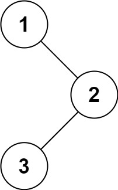

题面
给定一个二叉树的根节点 root ，返回 它的中序 遍历 。
示例 1：

输入： root = [1,null,2,3]
输出：[1,3,2]示例 2：
输入： root = []
输出：[]示例 3：
输入： root = [1]
输出：[1]提示：
- 树中节点数目在范围
[0, 100]内 -100 <= Node.val <= 100
进阶: 递归算法很简单，你可以通过迭代算法完成吗？
思路
- 颜色标记法：用栈模拟递归，通过标记区分节点的两种状态：
- WHITE（0）：第一次遇到，还没展开——需要把它"拆"成 left、自己、right 放回栈
- GRAY（1）：已经展开过，该输出了——直接加入结果
- 中序遍历顺序是 左 → 根 → 右，但栈是后进先出，所以入栈顺序要反过来：右 → 根(GRAY) → 左。弹出时自然就是 左 → 根 → 右
- 本质是用栈手动模拟递归调用栈：
- 递归的
inorder(left)→ 入栈(WHITE, left) - 递归的
res.append(node.val)→ 入栈(GRAY, node)，弹出时执行 - 递归的
inorder(right)→ 入栈(WHITE, right) - 这个方法的精妙之处：只需要改变三行入栈的顺序，就能实现前序/中序/后序遍历
- Python 知识点：
- list 可以直接当栈用：
append()= 入栈，pop()= 出栈，list[-1]= 看栈顶 - 元组解包：
color, node = stack.pop()直接拆成两个变量，比node[0]、node[1]更清晰
代码实现
class Solution:
def inorderTraversal(self, root: Optional[TreeNode]) -> List[int]:
WHITE, GRAY = 0, 1
res = []
stack = [(WHITE, root)]
while stack:
color, node = stack.pop()
if node == None:
continue
if color == WHITE:
stack.append((WHITE, node.right))
stack.append((GRAY, node))
stack.append((WHITE, node.left))
else:
res.append(node.val)
return res- 复杂度：时间 O(n)，空间 O(n)（栈的深度）
解法二 递归
思路
- 中序 = 左 → 根 → 右，代码顺序就是：先递归左子树，再处理当前节点，再递归右子树
- 前序/后序只需调换
ans.append(node.val)的位置：放最前面 = 前序，放最后面 = 后序 - 为什么 `ans` 不用作为参数传入 dfs？ 因为
dfs是定义在inorderTraversal内部的嵌套函数，可以直接访问外层函数的局部变量ans（闭包）。ans.append()是修改列表内容，不是重新赋值，所以不需要nonlocal声明也不需要传参 - 为什么递归调用没有返回值？ 这个递归的目的不是"算出值返回给上一层"，而是"产生副作用"——往
ans里 append。dfs(node)的含义是"把 node 这棵子树的所有值按中序加入 ans"，调用完就已经完成任务了。和两数相加那种"每层返回一个节点"的递归是两种模式： - 有返回值的递归：每层构建结果，返回给上一层组装（如两数相加）
- 无返回值的递归（本题）：每层直接把结果写入外部变量，不需要返回
代码实现
class Solution:
def inorderTraversal(self, root: Optional[TreeNode]) -> List[int]:
def dfs(node: Optional[TreeNode]):
if not node:
return
dfs(node.left)
ans.append(node.val)
dfs(node.right)
ans = []
dfs(root)
return ans- 复杂度：时间 O(n)，空间 O(n)（递归调用栈）